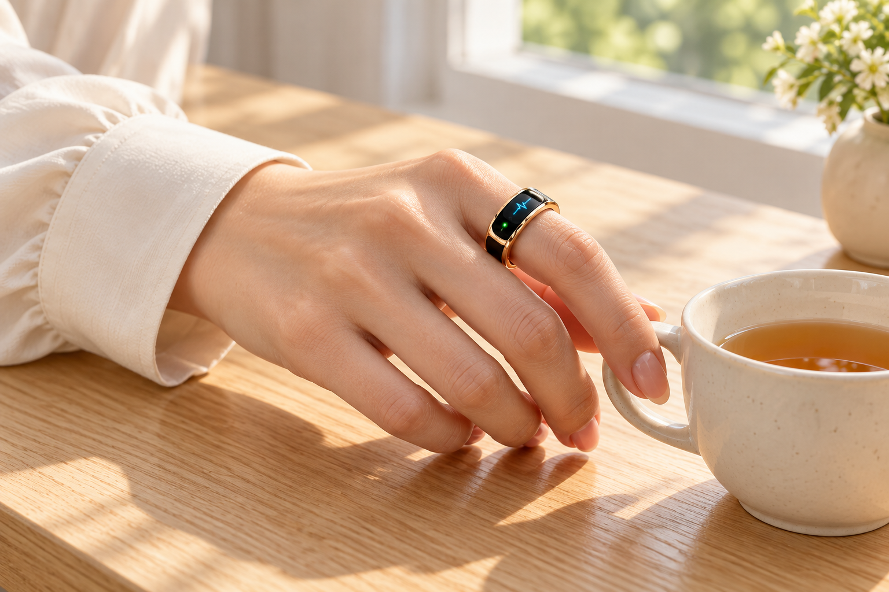
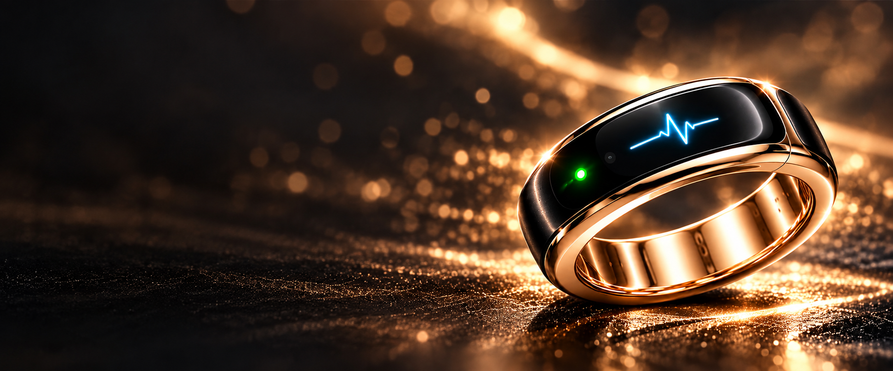
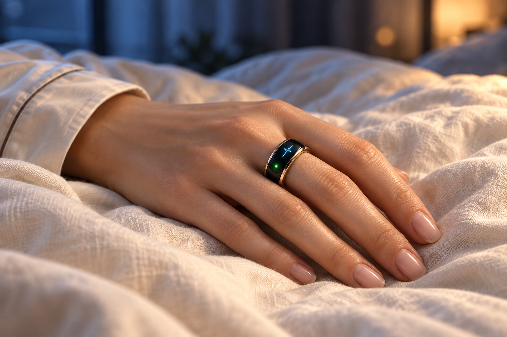
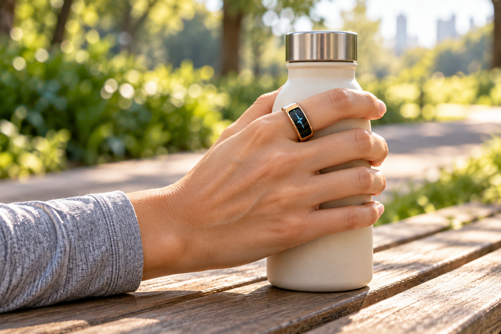
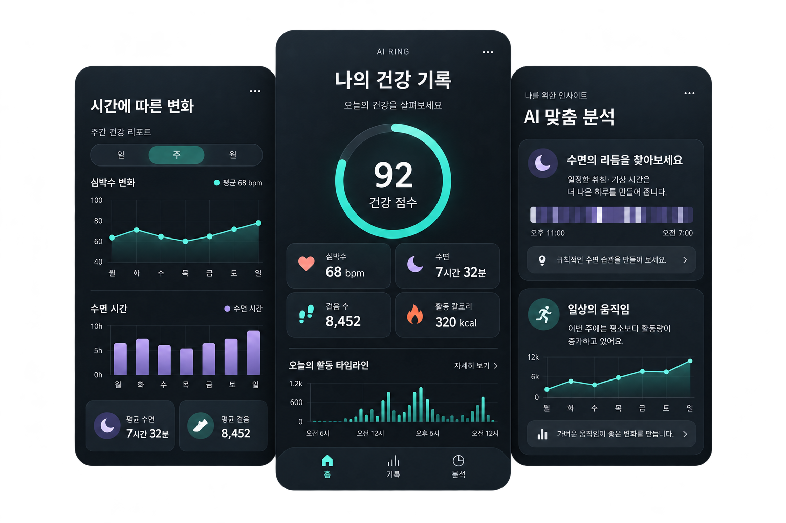
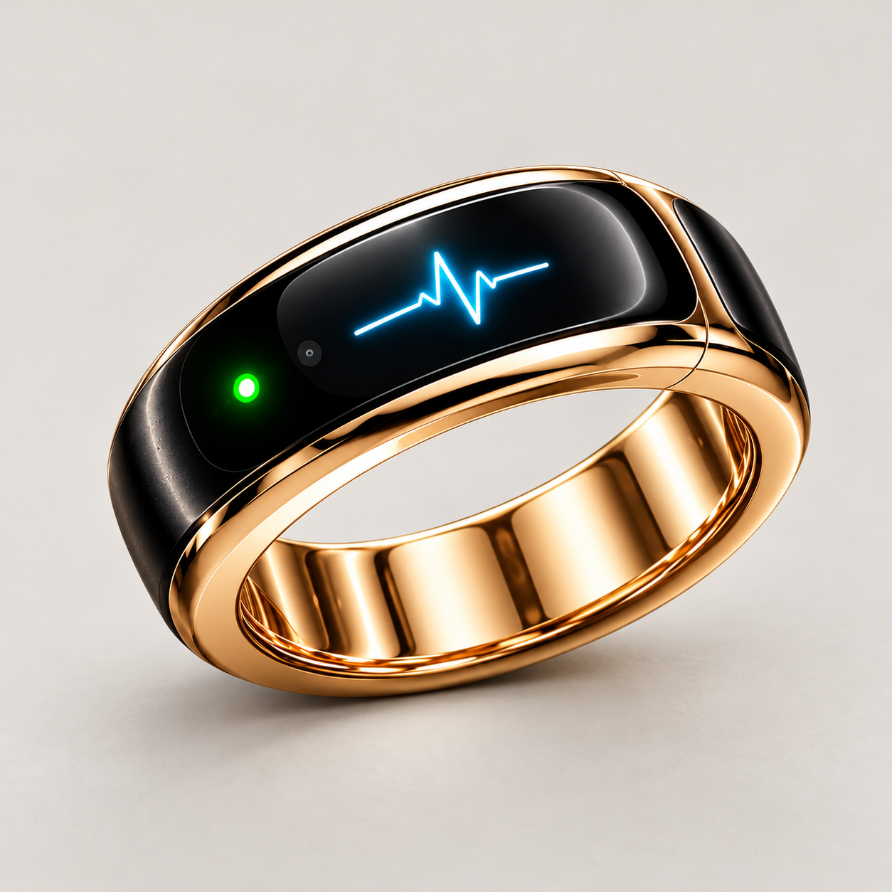
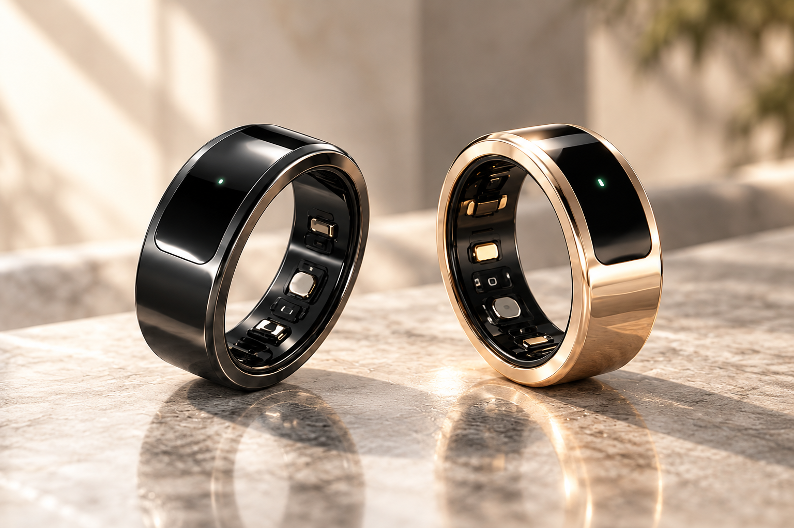

01 / EVERYDAY HEALTH내 몸의 변화에
내 몸의 변화에
조금 더 가까이.
심박수와 체온 변화 등 일상의 건강 기록을 살펴보세요. 작은 변화에 관심을 기울이는 순간부터 나를 알아가는 습관이 시작됩니다.

수면과 활동, 그리고 일상의 건강 기록까지.
AI 건강 링은 몸이 보내는 정보를 살펴보고
나에게 맞는 건강 습관을 만들어가는 경험을 제안합니다.
몸의 변화부터 밤의 기록, 하루의 움직임까지.

심박수와 체온 변화 등 일상의 건강 기록을 살펴보세요. 작은 변화에 관심을 기울이는 순간부터 나를 알아가는 습관이 시작됩니다.

잠든 시간에도 이어지는 기록. 수면 시간과 패턴을 돌아보고, 나에게 맞는 휴식의 리듬을 찾아보세요.

산책과 운동, 일상의 움직임을 기록하세요. 걸음 수와 활동량의 흐름을 살펴보며 나의 하루를 돌아봅니다.
기능과 세부 사양은 제품별 안내를 확인해 주세요.
나의 건강 기록과 시간에 따른 변화, AI 맞춤 분석까지.
앱에서 하루를 살펴보고 나에게 맞는 건강 습관을 찾아보세요.


손가락 크기에 맞춰 조절하는 프리사이즈 디자인. 일상에서 편안하게 착용할 수 있도록, 크기와 착용감을 함께 생각했습니다.
네 가지 컬러 살펴보기 ↗블랙 골드
01 / 04
깊은 블랙과 따뜻한 골드의 조화.
화면에 따라 실제 색상과 차이가 있을 수 있습니다.
AI 건강 분석과 스마트폰 앱 연동,
사이즈 조절형 프리미엄 디자인.
새롭게 준비 중인 제품을 먼저 소개합니다.
현재 정식 출시를 준비 중이며, 정식 판매 가격과 세부 사양 및 호환 가능한 OS는 출시 일정에 맞춰 순차적으로 공개될 예정입니다.
안내된 금액은 예상 가격이며 실제 출시 가격은 변경될 수 있습니다. 기존 건강 링과 별개의 상품으로, 신규 상품 관련 사항은 추후 별도로 안내합니다.

네. 홈페이지 상단에서 소개하는 AI 건강 링과 출시 예고 영역의 프리미엄 AI 건강 링은 별도 상품입니다. 신규 상품의 세부 사항은 추후 별도로 안내할 예정입니다.
출시 예상 가격은 535,000원이며 실제 출시 가격은 변경될 수 있습니다. 세부 사양과 호환 가능한 OS는 출시 일정에 맞춰 순차적으로 공개할 예정입니다.
손가락 크기에 맞게 조절하는 프리사이즈 구조입니다. 실제 착용 방법과 사용 가능한 조절 범위는 제품별 안내를 확인해 주세요.
현재 안내하는 협찬은 기존 AI 건강 링을 대상으로 합니다. 신규 프리미엄 상품의 협찬은 이번 안내에 포함되지 않으며 추후 별도로 고지할 예정입니다.